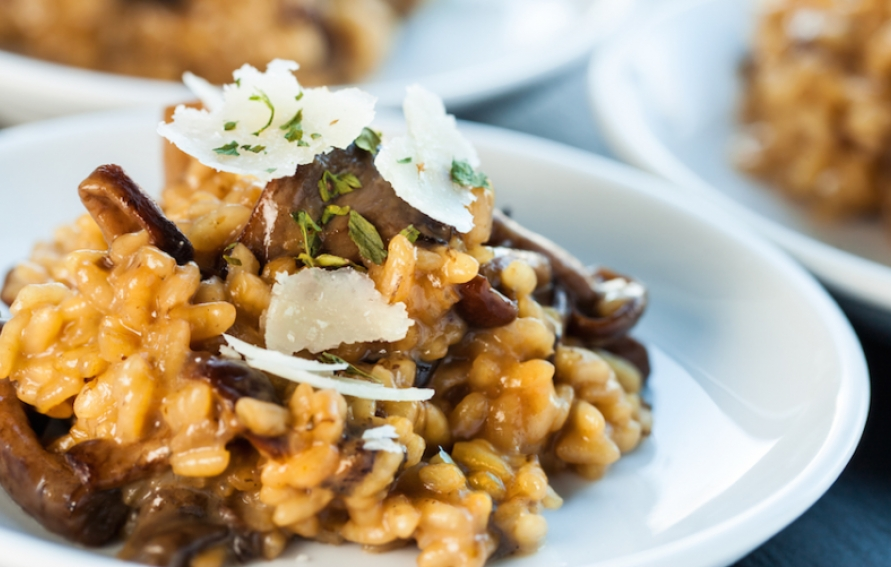

Ingredients
- 20g of dehydrated porcini mushrooms
- 1 liter of vegetable broth
- 1 tablespoon unsalted butter
- 1 tablespoon chopped onion
- 160 g carnaroli rice
- 1/4 cup dry white wine
- 1 tablespoon (full) grated parmesan
- salt and black pepper to taste
Steps
- Soak the mushroom in warm water for 15 minutes. Strain and reserve the water.
-
In a large pan, sauté the onion in olive oil. Add the unwashed rice and sauté a little more. Add the porcini. Pour in the wine and stir so that the alcohol evaporates. Gradually add the hot broth and a little of the mushroom water. Continue adding the broth as the rice dries. Keep the heat low and stir occasionally with a wooden spoon.
- Just before the rice reaches the point "al onda", turn off the heat, add the butter and then the Parmesan and adjust the salt. Serve straight away.